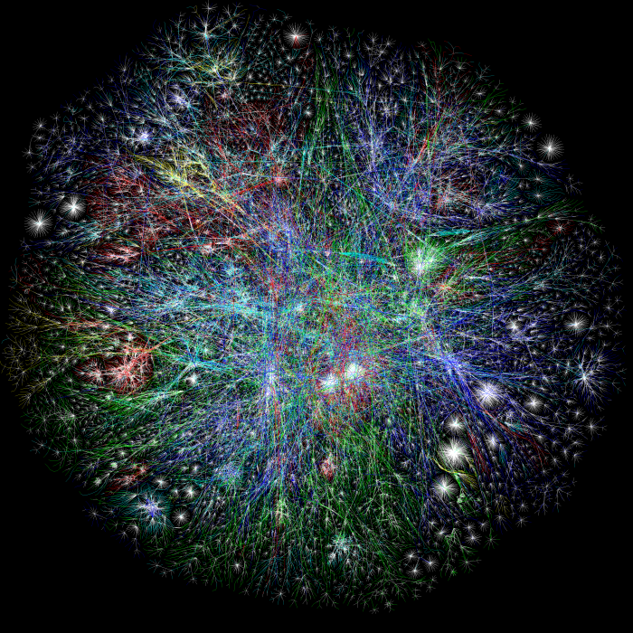
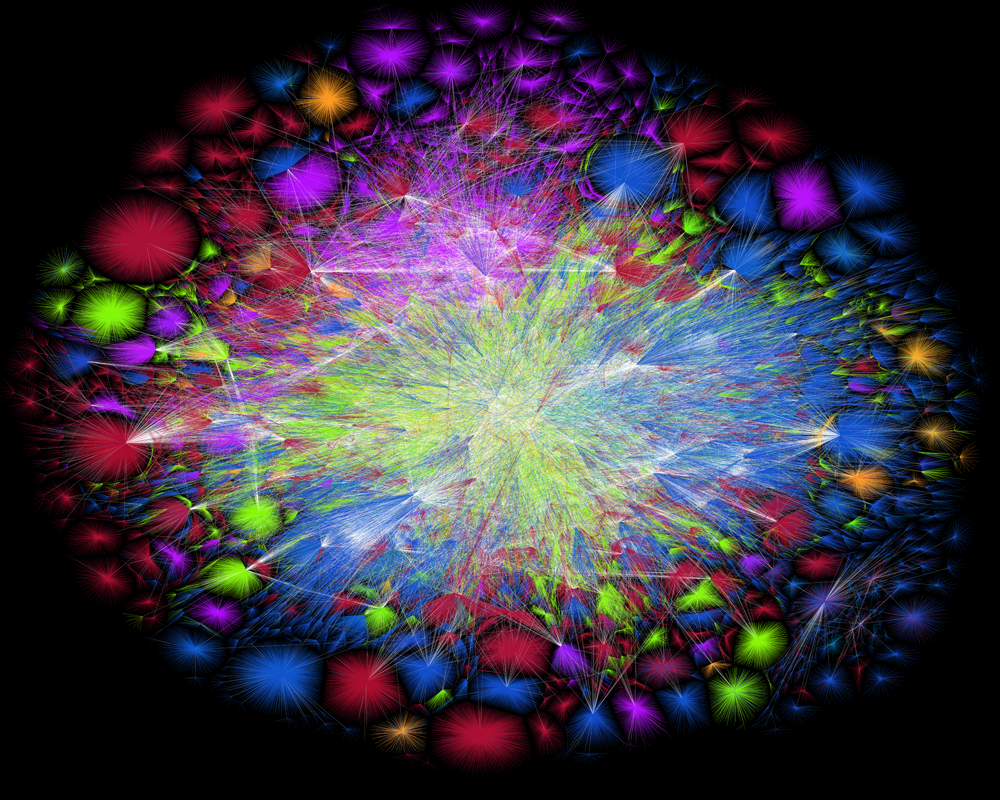

Webvisualisatie
Traceroute
Traceroute is een tool die gebruikt kan worden om meer informatie te krijgen over de verbinding tussen hosts. Men kan hiermee namelijk zien door welke router de pakketten gaan, voordat die bij de eindbestemming zijn aangekomen. Een handige webtool vind je op http://ping.eu/traceroute/. Eenmaal aangekomen op de site vult men een adres in, dit kan zowel een IP-adres zijn als een URL. Het programma stuurt dan meerdere, speciale pakketten naar de bestemming. Op de weg naar de eindbestemming komen deze pakketten door verschillende routers heen. Als de router zo’n speciaal pakketje ontvangt, stuurt deze een reactie terug naar de bron van het signaal, met een klein bericht. Dit bericht bevat de naam en adres van de router. Hoe dit werkt: Stel dat er N-1 routers zijn tussen de bron en eindbestemming. De bron zal N pakketten het netwerk in sturen, geadresseerd aan de eindbestemming. Ieder pakket is gemarkeerd met 1 tot N, waarbij het eerste pakket 1 is, en de laatste N. Als de Nde router het Nde pakket ontvangt, en als deze de markering N heeft, zal de router dit pakketje niet doorsturen naar de bestemming, maar in plaats daarvan stuurt het een bericht terug naar de bron. Ook de eindbestemming zal een bericht terugsturen als deze het Nde pakket heeft ontvangen. In de tussentijd is de bron steeds de tijd aan het bijhouden hoelang het duurt voordat er een bericht terugkomt van een router. Ook houd de bron alle namen en adressen van de routers bij. Op deze manier is het mogelijk om precies terug te leiden door welke routers een pakket is gegaan, hoeveel tijd er zit tussen het sturen van een pakket, en de tijd die het kost voordat er een bericht teruggekeerd is.
Hieronder is een voorbeeld te zien van een traceroute, met behulp van het programma PingPlotter. Hier wordt als eindbestemming het computerscience departement van de Yale University genomen. De host is het huidige ip-adres, in dit geval 84.104.197.95. De eerste kolom is de N, zoals hierboven beschreven. Deze kolom wordt “hops” genoemd, naar het aantal sprongen dat een pakket moet maken voordat het bij de eindbestemming is aangekomen. De tweede kolom is packet loss percentage, als er ergens pakketten kwijtgeraakt worden, wordt dat hier weergegeven. De derde kolom is het IP-adres van de router dat het pakket ontvangt, deze informatie wordt gehaald uit het bericht dat de router terugstuurt als deze het Nde pakket ontvangt gemarkeerd met N. De vierde kolom bevat de naam van de router, die ook uit dit bericht wordt gehaald. Met deze naam kan je er bijvoorbeeld achter komen waar de router zich bevindt. De vijfde kolom, genaamd “avg”, is de gemiddelde tijd in milliseconden voordat er een antwoord ontvangen is. De laatste kolom, “Latency”, geeft grafisch weer hoeveel milliseconden antwoordverschil er tussen de verschillende routers zit. Zo lijkt het logisch dat de pakketten tussen hop 5 en hop 7 de oceaan oversteken, aangezien het na hop 5 aanzienlijk langer duurt voordat er per router antwoord is, en de naam van de router N=7 begint met US-was. Hieruit kan je opmaken dat deze router in Washington, Verenigde Staten staat.
In het voorbeeld hierboven zijn er 11 routers tussen de bron en de eindbestemming, en totaal duurde het 124 milliseconden voordat het pakket was aangekomen, en er een antwoord was ontvangen.
The Internet Map
The Internet Map heeft de visualisatie van het internet een stuk letterlijker genomen. Deze site is een beeldopname van het internet genomen rond eind 2011 en bestaat uit 350.000 websites. De ‘Internet map’ is een twee dimensionale presentatie van relaties tussen websites, waarbij elke site een cirkel voorstelt op de kaart, en de grootte van de cirkel bepaald wordt door de hoeveelheid van het verkeer; hoe meer verkeer, des te groter de cirkel. Wanneer een gebruiker van de ene site naar een andere site gaat, wordt er een koppeling gevormd en hoe sterker de koppeling, hoe dichter de websites bij elkaar neigen te staan. Elke cirkel heeft een kleur die uniek is voor het land waar de site gehost wordt. De gebruikte statistieken zijn verzameld door Alexa (een toolkit waarmee bijvoorbeeld het aantal bezoekers van een website kan worden gezien). De site geeft een erg interessant beeld over welke sites met elkaar verbonden zijn en daarmee dus welke volkeren geïnteresseerd zijn in welke sites. Een grappig voorbeeld is de verbintenis tussen Brazilië en Japan, namelijk de cluster van porno-sites.
Bovenstaande afbeelding toont de ‘Internet Map’ waarin door ons is aangegeven wat de grote clusters voorstellen. Zoals verwacht is de cluster van porno-sites zo groot, dat het een hele eigen nationaliteit lijkt.
Map of the Internet
Het bedrijf PEER1 (een belangrijk bedrijf in de hosting industrie) heeft in 2013 in app uitgebracht op Android en iOS die op een aantal manieren een prachtige visualisatie in drie dimensies geeft van het internet en specifiek 22.961 nodes van autonome systemen (netwerk dat beheert wordt door een enkele organisatie) die verbonden zijn door 50.519 verbindingen.
Een van de twee kern-functies van de app is de ‘Globe View’ waarop alle netwerken te zien zijn op een 3D wereldbol. De gebruiker kan op elke node klikken, en ziet vervolgens hoe deze verbonden is in het netwerk en andere relevante informatie over de node. Dit is natuurlijk allemaal erg interessant om te zien, maar de app heeft ook een leerzame kant. De app heeft namelijk een ingebouwde tijdlijn die de groei van het internet laat zien vanaf 1994. De gebruiker kan overal op de tijdlijn klikken, om alle veranderingen per belangrijke momenten te volgen (zoals het begin van bekende websites als google en facebook).
De tweede belangrijke functie is de ‘Network View’. Deze functie geeft een beeld van het internet als een netwerk, waarbij de nodes groter worden en hoger staan, als ze meer verbindingen hebben (staat gelijk aan belang van de node). Deze functie is wat technischer en bedoeld voor een duidelijk beeld van grootste nodes aflopend naar kleinere nodes (waarbij de grootte gebaseerd is op het aantal verbindingen).
Ook is het mogelijk om websites op te zoeken, waarna de gebruiker te zien krijgt door welke node de website wordt gehost (de bovenste suggestie is de locatie van de gebruiker die de node laat zien waar de gebruiker zich in bevindt). Daarna kan de gebruiker een traceroute ophalen naar zijn eigen plek in het netwerk. Nodes zijn voor duidelijkheid gecategoriseerd op kleur, namelijk lichtblauw voor een grote ISP, donkerblauw voor een kleine ISP, paars voor een universiteit, wit voor een Internet Exchange Point, grijs voor een Network Information Center en groen voor een Organization Network.
Bovenstaand afbeelding geeft de verschillen weer tussen de twee functies en geeft een beeld van de user interface.
In het volgende filmpje wordt de app gedemonstreerd:
The Opte Project
Het originele idee van de makers van The Opte Project, was een kaart maken van het internet. Aangezien het internet in principe een gigantische hoop verbindingen van data is, leek het de makers alleen maar logisch om een visualisatie te maken waar lijntjes worden getrokken van een punt naar een ander punt. Dit resulteerde in een afbeelding van alle relaties van alle netwerken van het web. Deze afbeelding is nu een icoon dat wordt gebruikt in honderden boeken, films en en educatieve doeleinden.
Hieronder zie je de afbeelding die gemaakt is in 2003:
De afbeelding die je hierboven ziet, is dus het internet. De “punten” zijn nodes, en de lijnen ertussen zijn traceroutes. De verschillende kleuren zijn gebaseerd op de regio’s waar de (Classe A) ip-adressen verstrekt zijn. Hier is Azie rood, Europa en Afrika zijn groen, Noord Amerika is blauw en latijns amerika is geel. De witte gebieden zijn onbekend.
In 2015 is er nog een keer een afbeelding naar buiten gebracht, deze zie je hieronder:
Het eerste dat opvalt als je deze visualisatie vergelijkt met die van 2003, is natuurlijk dat het internet enorm gegroeid is.
De kleuren en bijbehorende landen zijn:
- North America (ARIN)
- Europe (RIPE)
- Latin America (LACNIC)
- Asia Pacific (APNIC)
- Africa (AFRINIC)
Wat nieuw is in deze visualisatie, is de backbone (de witte lijntjes en punten). Dit zijn de nodes waar de meeste data doorheen gaat, en zeer veel connecties heeft. De backbone verbindt alle andere grote netwerken met elkaar, en hoort daarom niet echt bij een bepaald gebied.